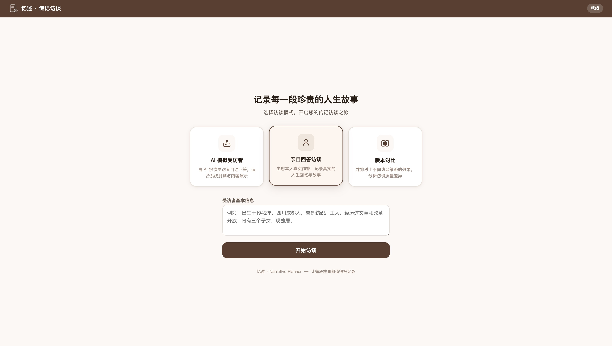
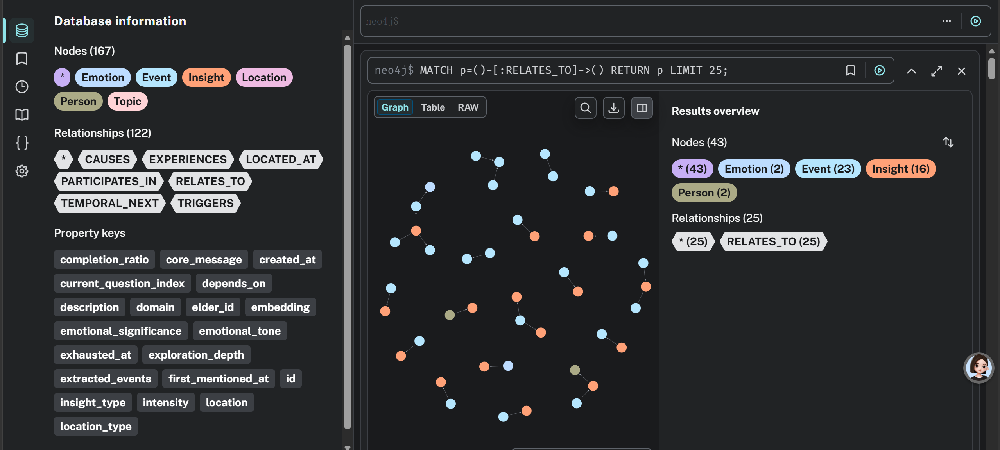
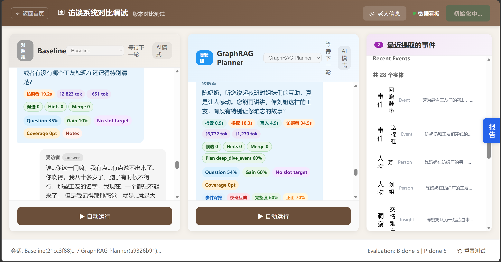

用科技留存岁月 Preserving Lives Through Technology
一个基于动态事件图谱的回忆录访谈规划系统。通过实时图谱构建与语义检索，辅助 LLM 进行更深入、更连贯、更完整的人生叙事访谈。 A GraphRAG-based interview planning system for memoir generation. Real-time event graph construction and semantic retrieval assist LLMs in deeper, more coherent, and more complete life-narrative interviews.
回忆录访谈是一项专业工作。当对话动辄数十轮时，我们观察到现有 LLM 普遍存在三类系统性缺陷： Memoir interviewing is a craft. Across long, multi-turn conversations we observe three recurring failure modes in off-the-shelf LLMs:
缺乏全局规划。话题随机漂移，重要的人生阶段被遗漏，访谈结束时仍存在大片空白。 No global plan. Topics drift, key life stages get skipped, and entire decades remain blank when the session ends.
缺乏深度挖掘机制。停在表面事实，无法触及情感、细节与反思——而那才是回忆录的灵魂。 Stops at surface facts. Never digs into emotion, sensory detail, or reflection — the substance that makes a memoir worth reading.
话题切换生硬。从父亲跳到工作再跳到童年，老人感到困惑，对话失去连贯。 Topic switches feel abrupt. The interviewee gets disoriented, and the conversation loses narrative coherence.
我们设计了一个独立的访谈决策规划模块（Planner），它不直接生成对话，而是输出结构化的战术指令——告诉对话 Agent 下一步该深挖什么、何时切换话题、用什么语气。Planner 的依据来自一张实时构建、不断生长的人生事件图谱。 We built a standalone interview decision planner that does not produce dialogue itself. Instead it emits structured tactical instructions — telling the conversational agent what to probe next, when to switch topics, and what tone to use. Its decisions are grounded in a live, ever-growing life-event graph.
"用科技留存岁月。" "Preserving lives through technology."
从极简生平出发，搭建"待填空的生命树"——通用人生阶段大纲。 Start from minimal biography. Build a blank life-tree — a universal stage-by-stage outline waiting to be filled.
边访谈边织网：捕捉高亮实体（人名、时间），挂载到骨架，预测潜在子任务。 Weave the web while interviewing: capture salient entities (people, times), attach to the skeleton, predict latent sub-tasks.
覆盖率 > 70% 时切换至总结模式，扫描全图寻找高频情绪，提炼出主题（如《漂泊中的安宁》）。 Once coverage exceeds 70%, switch to synthesis mode: scan the graph for emotional motifs and surface a theme (e.g., "Stillness Within Drifting").
当核心事件槽位未满、情绪能量高时触发。三条子路径： Triggered when core slots are unfilled and emotional intensity is high. Three sub-paths:
当信息密度衰减、出现疲劳时触发。五种跳转策略，按体验质量排序： Triggered when information density drops or fatigue appears. Five strategies, ordered by interview quality:
基于 WebSocket 的流式回应，规划与对话同步进行，无感等待。 WebSocket-streamed responses. Planning runs concurrently with dialogue — no waiting.
基于 Neo4j + GraphRAG 实时构建人生事件图谱，覆盖率可视化。 Live event graph on Neo4j + GraphRAG. Coverage and density rendered visually.
支持照片上传、语音口音识别、多图叙事链条，触发感官记忆。 Photo upload, accent-aware speech, multi-image narrative chains — sensory cues that unlock memory.
三种产出风格：个人风格、名家风格、传统回忆录风格。 Three output voices: personal, literary master, classic memoir.
所有产出严格基于访谈内容，每段叙述可追溯到原始对话。 Every line of output is grounded in actual interview content. Fully traceable to source dialogue.
覆盖率、深度、连贯性的自动化指标，配 LLM-as-judge 仿真测试。 Automated coverage, depth, and coherence metrics, paired with LLM-as-judge simulations.
老人可随时中断，下次开启自动温故知新，从挂起状态继续。 The interviewee can pause anytime. Next session resumes from the saved state — gracefully.
话题切换使用桥接语，避免审讯感，让老人感到被倾听。 Topic switches use bridging language. No interrogation feel — the interviewee feels heard.



我们构建了 LLM 驱动的"模拟受访者"环境，让 Planner 与无规划的纯对话 Agent 进行多轮访谈对照实验。 We built an LLM-driven simulated interviewee and ran controlled multi-turn experiments comparing the Planner against a vanilla conversational baseline.
覆盖更完整的人生阶段，减少访谈空白。 More complete life-stage coverage, fewer narrative gaps.
每个话题的平均挖掘深度显著提升。 Significantly deeper exploration per topic.
由 LLM 评分的话题切换流畅度。 Topic-switch fluency, scored by LLM as judge.
※ 完整实验报告与原始数据见技术报告 PDF。 ※ Full experimental report and raw data available in the technical paper.